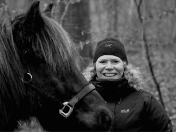
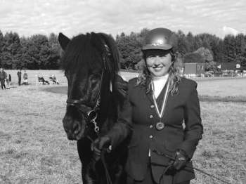
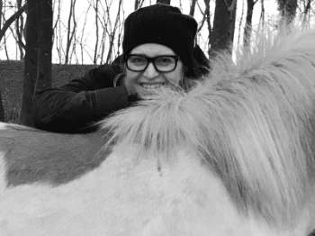
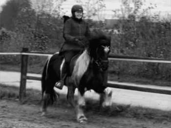
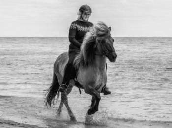
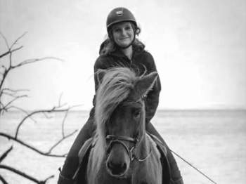

ASKA islænderklub Århus syd for isheste og islændere
Om ASKA
ASKA's udvalg
ASKA’s udvalg er fundamentet i foreningen, som arbejder med at planlægge forskellige arrangementer og aktiviteter i klubben. Der er følgendeudvalg:
- Stævneudvalg
- Junior- og ungdomsudvalg
- Foredrags- og kursusudvalg
- Turudvalg og sponsorudvalg.
Derudover holder ASKA klubdage, hvor der er mulighed for at mødes på kryds og tværs.
ASKA's logo
ASKAs logo er udarbejdet af Lotte Andreasen fra Ping Pong
Posters.
Logoet er delvist inspireret af navnet ASKA, som betyder aske.
Asken er forbundet med vulkanen, der ses i baggrunden. I
forgrunden er afbilledet en smuk hoppe, der hedder Askja, hvis
hårpragt er enorm – og karakteristisk for den islandske hest.
Endvidere er tilhørsforholdet til Aarhus syd en del af logoet
for at understrege, at ASKA er en lokalklub beliggende lige
netop her.
ASKA's bestyrelse
Der er i alt syv medlemmer af ASKAs bestyrelse: En formand, en
næstformand, en kasserer, to bestyrelsesmedlemmer og to
suppleanter.
Nedenfor kan du se bestyrelsesmedlemmerne og deres
kontaktoplysninger.
Alle bestyrelsesmøde-referater er samlet i en mappe
sammen med vedtægterne og forretningsorden, kan fremvises
efter ønske.

FORMAND
Pernille Maj Svendsen
Mail: aska.pernille.svendsen@gmail.com

NÆSTFORMAND
Siri Fog
Mail: siri_fog@hotmail.com

KASSERER
Louise Elgaard
Mail: louise.elgaard@gmail.com

BESTYRRELSESMEDLEM
Aimie Bjørnsholm
Mail: aimiemb@gmail.com

BESTYRRELSESMEDLEM
Lone Skriver Premante
Mail: lone.premate@hotmail.com

SUPPLEANT
Lise Uhre Pless
Mail: lise@uhrepless.dk
Bestyrelsen holder møder den første tirsdag i hver måned i 2021.
ASKA's klubdage
Klubdagene arrangeres af bestyrelsen og annonceres via facebook.
Klubdagene er tænkt som dage, hvor ASKA’s medlemmer har mulighed
for at mødes. Her er der plads til alle medlemmer, store som
små, med eller uden hest. Vi ønsker med klubdagene at skabe gode
anledninger til at mødes omkring vores fælles interesse, den
islandske hest, sludre, få råd, og hvem ved måske gøre nye
bekendtskaber.
Klubdagene afholdes løbende, og vi bestræber os på at holde 8
årlige klubdage på Vilhelmsborg. Når årstiden tillader det, er
vi på ovalbanen, og i de koldere måneder rykker vi ind i
ridehallen (den gule hal).
På de fleste klubdage udbydes en form for arrangement med
tilmelding. Det kan være forskellige former for undervisning,
sjove aktiviteter med hestene, eller det kan være et af vores
udvalg, der står for noget særligt.
Datoer for klubdage kan du se her på hjemmesiden i ASKA’s
kalender og på facebook - og de særlige arrangementer i
forbindelse med klubdage annonceres på facebook.
ASKA's staldambassadører
- Jyttes stald, Jytte Juul
- Stald Orson, Iben Sjerslev
- Havbakkegaard, Lise Uhre Pless
- Fløjstrup Hus, Signe Barre Kaavé
- Seldrupgaard, Marianne Bleeker
- Samling af gårde i Testrup, Tiset og Ravnholt, Susan Elmkjær
- Fløjstrup Mark, Jannie Hedegaard Andersen
- Stald Førster, Pernille Vilholm Ibsen
- Stald Bjørnkjær, Marianne Kjær
- Anelyst, Rikke Dam
- Strandgaarden, Michala Høgsgaard
- Stald Toftvang, Iben Toftvang Ottesen
- SOEMMI HORSES & ALPACAS, Rikke Bervig
- Villagaarden, Maria Bill
ASKA's værdier og vedtægter
ASKA er en islænderklub for alle med passion for den islandske
hest – og som gerne vil dele glæden med andre. Din passion kan
både være stævner, skovture, banetræning, horsemanship – eller
det, som giver dig glæde med din hest. I ASKA kender mange
hinanden, flere kommer til det, og alle bliver taget godt i
mod.
ASKA’s mål er at sikre bredde i klubbens aktiviteter, der
afspejler vores medlemmers interesser. ASKA ønsker både at
appellere til eliterytteren, såvel som rytteren, der finder
sin glæde med den islandske hest på andre områder. ASKA ønsker
at væreDet er en klub med stor aldersspredning – og med appel
til de unge.
Vi vil tilstræbe, at det ikke bliver dyrt at deltage i ASKA’s
arrangementer - hverken i stævner,ture eller foredrag, men kan
også lide, at der er en vis grad af luksus og overraskelser.
ASKA vil være en islænderklub, hvor de gode ideer springer
frem fra alle og prøves af - altså et sted hvor der er vilje,
gejst og sammenhold. Vi tror på, at alle klubbens medlemmer
kan bidrage og hjælper hinanden.
Download og læs Aska's vedtægter her:
Kontakt
Har du nogle spørgsmål, ideer til arrangementer, eller vil du
gerne i kontakt med ASKA, så skriv gerne en e-mail direkte til
bestyrelsen, et udvalg eller medlemmer af bestyrelse (se ASKA's
bestyrelse).
Kontakt ASKA’s bestyrelse direkte på: aska.bestyrelse@gmail.com